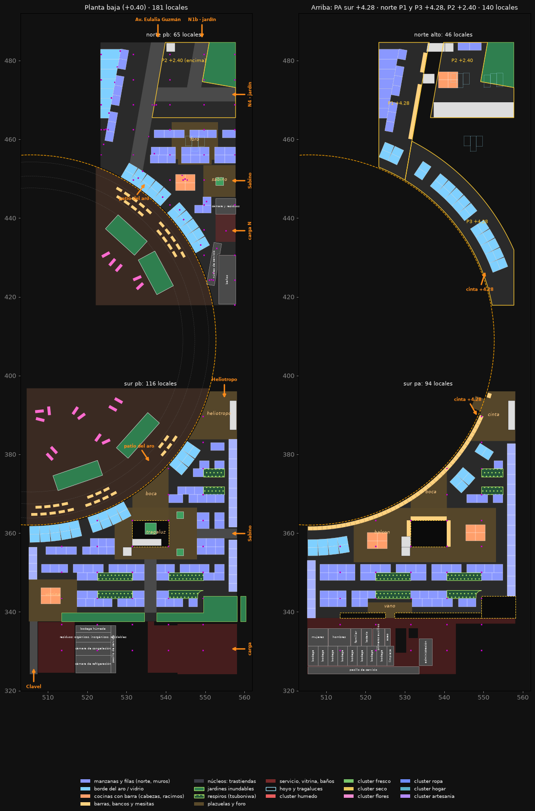
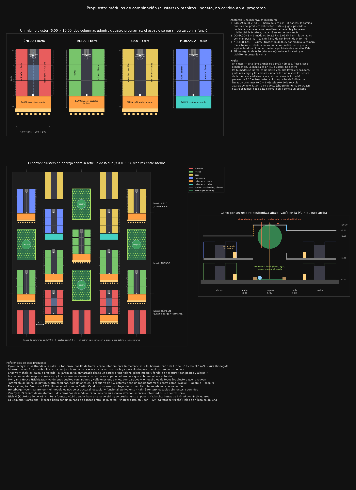
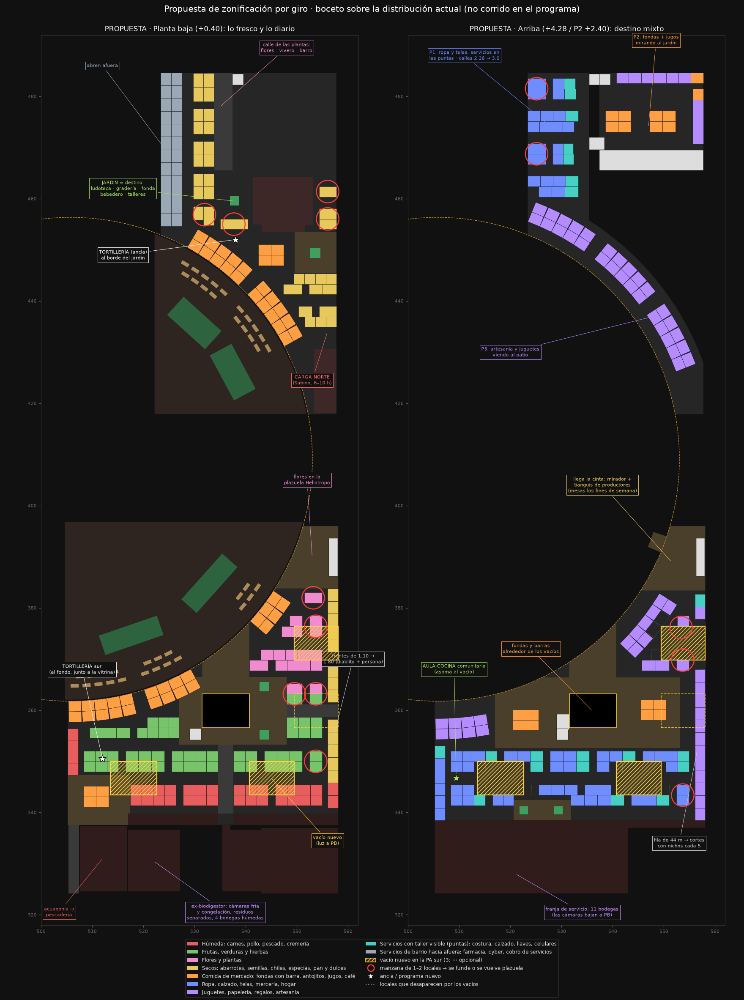
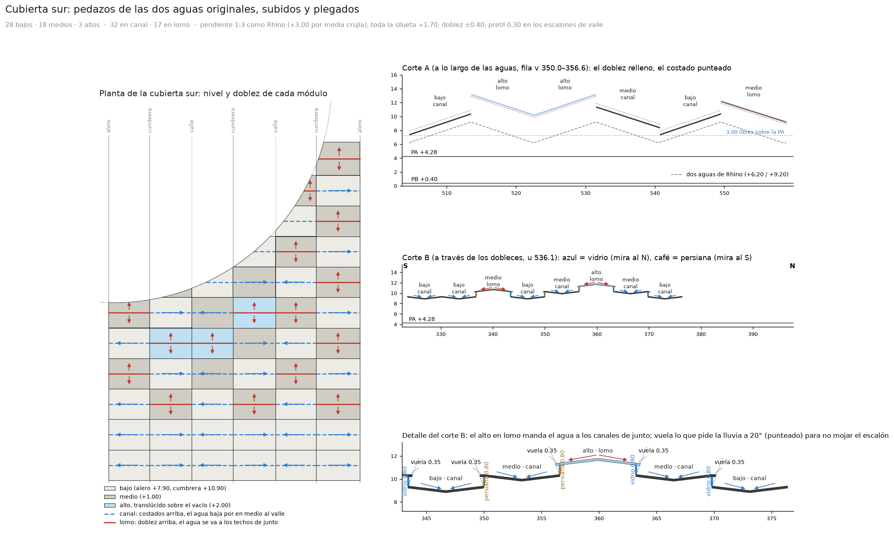
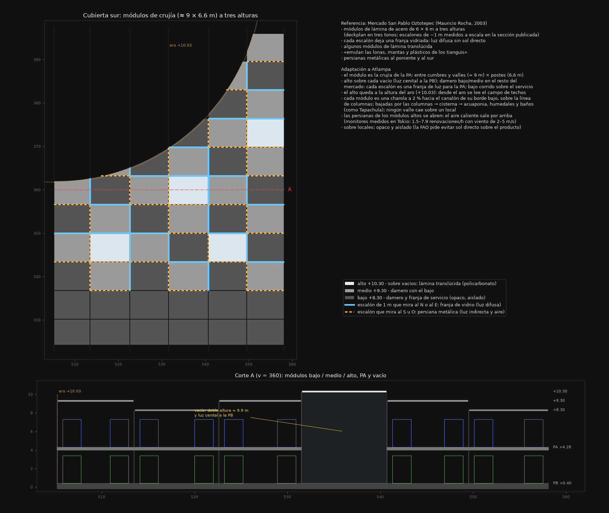
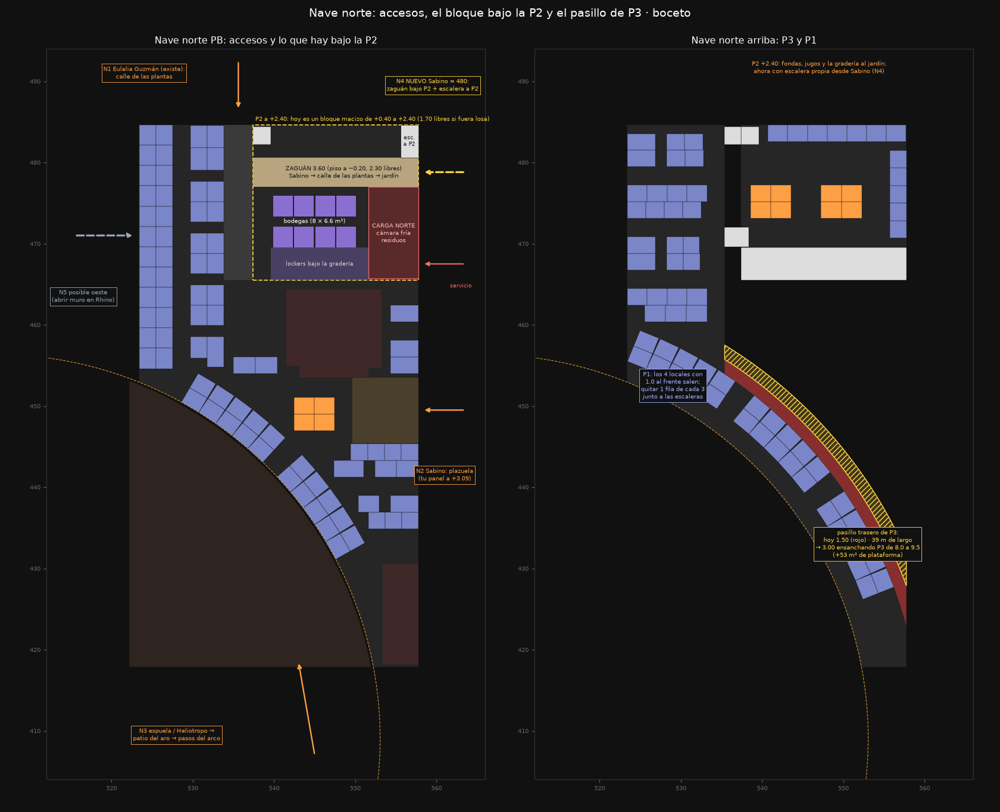
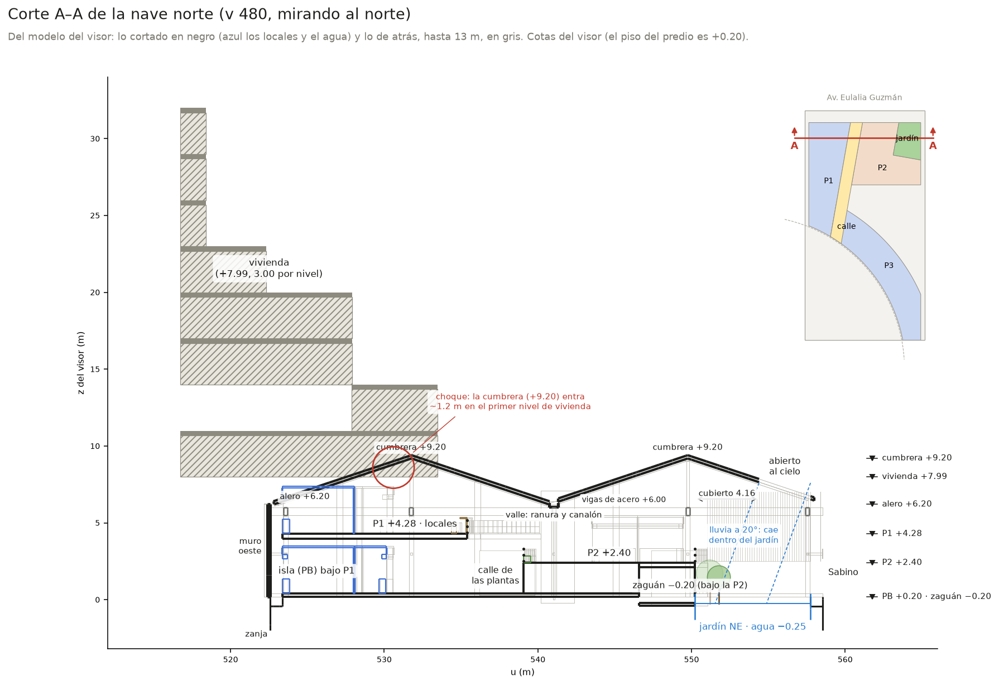
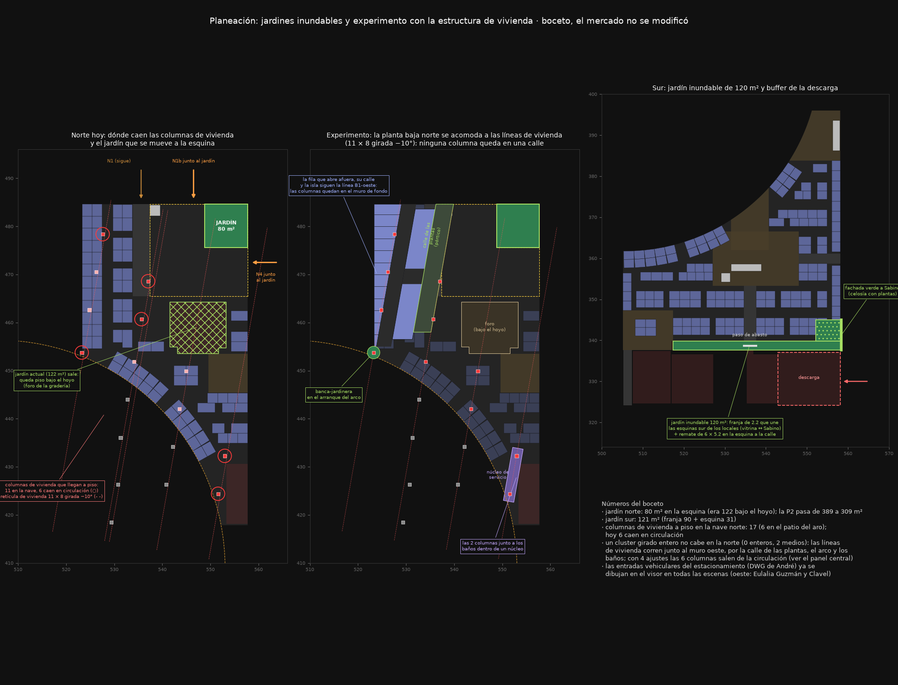
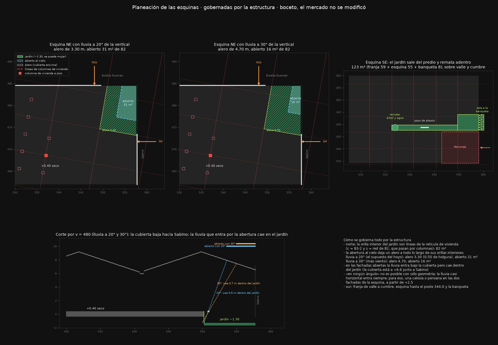

Planeación del mercado
Atlampa · estado al 13 de octubre de 2026 · nave norte, nave sur y locales del aro · abrir el visor
Ya está en el visor (versión 20261013f): la sur en manzanas de barrio con respiros, la ranura y la esquina a doble altura, la cubierta plegada, los jardines de las esquinas y la nave norte sobre la retícula de vivienda. Lo de «Lo que falta decidir» todavía no.
1. Lo que ya decidiste
- Las columnas de la estructura rigen todo. En la norte manda la retícula de vivienda (11 × 8, girada −10°). En la sur mandan las líneas de columnas de la nave (≈ 9.0) y los postes (6.6).
- Industria: el café o terraza sobre la industria lo trabaja André; no entra en nuestros 7,500 m².
- Biodigestor: se quita. En su lugar van cámaras frías, residuos y bodegas junto a la descarga.
- Calles de 3.00 donde hoy son de 2.26–2.50.
- P1 norte: se quitan unos pocos locales (los de 1.0 de frente) y se conservan todos los giros.
- Mezcla de mercancía y barra para comer, en módulos de combinación con divisiones claras: sin convivencia forzada.
- Sin restaurante. La comida es de mercado: fondas con barra, antojitos, jugos.
- El jardín inundable se divide. El del hoyo sale. Quedan 80 m² en la esquina NE «recibiendo gente» y 120 m² en las esquinas sur de los locales.
- Esquina NE: una parte abierta y un alero, para que el piso de +0.40 no se moje.
- Esquina SE: el jardín sale del predio y remata adentro.
- Los vacíos son respiros, con referencia japonesa: paisaje de fondo.
2. Meta de 7,500 m² de comercio
Cuenta huellas brutas (incluye plazas, baños, carga y vitrina) y no incluye arte y cultura.
| Componente | Hoy | Con lo planeado |
|---|---|---|
| Locales del aro (18 módulos × 22 m²) | 396 | 396 |
| Nave norte PB | 1,877 | 1,877 |
| Nave sur PB | 2,773 | 2,773 |
| Nave sur PA (−175 por los vacíos de luz) | 2,346 | ≈ 2,171 |
| Plataformas norte (P3 +53 al ensancharla; P2 −80 por el jardín de la esquina) | 1,117 | ≈ 1,090 |
| Total | 8,509 | ≈ 8,307 |
| Contra 7,500 | +1,009 | ≈ +807 |
Corrido en el modelo, con la sur en manzanas de barrio, los respiros, la ranura y la esquina a doble altura: 8,244 m², 744 por encima de la meta.
3. Investigación
Se revisaron unos 30 referentes y guías. Las conclusiones que siguen pesando:
- Lo fresco a nivel de calle; arriba, un destino (San Antón, Bolhão, Barceló, Tepoztlán). Hoy el 46 % de los locales está arriba.
- Calles de 3.0 m (Oztotepec de Mauricio Rocha, Sant Antoni), contra 2.26–2.50 hoy. En la CDMX la mercancía sale al pasillo.
- Locales que se juntan (Oztotepec: 3×3 → 3×6 / 6×6). Los nuestros son de 5 m² y no se juntan.
- Faltaban zonificación por giro, un ancla (tortillería) y bodegas: hoy hay 4 bodegas para 424 locales.
Detalle y fuentes: investigacion-referentes · propuesta 1: propuesta-mercado
4. Módulos de combinación (clusters) y respiros
descartado en la surBajaba mucho la densidad (284 locales). La sur volvió a las manzanas de barrio con respiros; ver abajo.
- Sur, ahora: manzanas cortas en aparejo (116 locales en PB y 94 en PA; 321 en todo el mercado).
- Tres respiros de pasillo, elegidos donde más acercan la luz a la PB:
- abajo, las dos medias filas que dan al pasillo se vuelven tsuboniwa (arriate, banca-borde y un árbol cada una);
- arriba son vacío y el pasillo de la PA pasa entre las copas, como puente;
- encima, un módulo alto translúcido.
- El jardín entre carga y mercado sube a la PA:
- una ranura de 1.40 abierta junto al muro ciego, con un árbol por crujía y tragaluz corrido encima;
- la esquina del jardín, a doble altura;
- un puente en el vano.

Lo de abajo es la propuesta de clusters, como quedó.
- Un cluster es una machiya en miniatura:
- cabeza con barra de comida que sale del producto del cluster;
- 3 + 3 puestos que se juntan, con franja de exhibición;
- núcleo de trastiendas (o cámara fría, en los húmedos) con las columnas adentro;
- pie con zaguán de servicio.
- Una familia por cluster. Los húmedos forman su propio barrio junto a la carga.
- Aparejo como el tatami bien puesto: nunca se cruzan cuatro esquinas.
- Los respiros ocupan el lugar de un cluster: tsuboniwa con borde-banca abajo y vacío en la PA; el módulo alto de la cubierta saca el humo de los comales.

5. Zonificación por giro
parcialSigue valiendo el reparto por zonas. El trazo de locales lo reemplazan los clusters.
- Planta baja: húmedos (sur, junto a la carga), frutas y verduras, semillas y secos (norte), flores, tortillería como ancla.
- Arriba: ropa, hogar, artesanía y servicios con taller en las puntas, más las fondas alrededor de los vacíos.

6. Cubierta sur y vacíos de luz
vigente
- Módulos de crujía a tres alturas, estilo Rocha en Oztotepec: bajo, medio (+1.00) y alto (+2.00) sobre los vacíos.
- Cada módulo es un pedazo de las dos aguas originales (pendiente 1:3, +3.00 por media crujía, como en Rhino), cortado y subido su escalón.
- Doblez en canal (costados arriba, doblez abajo) en los módulos con un vecino más alto: la lluvia baja por en medio hasta el valle, lejos del vidrio.
- Doblez en lomo en los más altos de su fila: el agua se va a los techos de junto. El alto vuela lo que pide la lluvia a 20° (0.35 en escalones de 1 m) y en los valles el pie del escalón es pretil de lámina (0.30).
- La silueta entera sube 1.70 (alero +7.90, cumbrera +10.90) para dejar 3.00 libres sobre la PA en el punto más bajo.
- Los escalones que miran al N o al E llevan vidrio; los que miran al S o al O, persiana.


7. Nave norte: accesos, la P2 y el pasillo de P3
parcialEl jardín de la esquina mueve el acceso de Sabino y el zaguán bajo la P2.
- La P2 hoy es un bloque macizo de +0.40 a +2.40. Se vacía con el piso a −0.20, para tener 2.30 libres, y caben bodegas y la carga norte.
- Pasillo trasero de P3: mide 1.50; con P3 de 9.5 m queda de 3.00.
- Accesos: Eulalia Guzmán (calle de las plantas), plazuela de Sabino y la espuela por el patio del aro. Se suman dos junto al jardín de la esquina: N1b por Eulalia Guzmán y N4 por Sabino.


8. La estructura de vivienda en la nave norte
vigente
- 17 columnas de vivienda llegan a piso. Hoy 6 caen en circulación, una en plena calle de las plantas.
- Un cluster girado entero no cabe en la norte.
- Se acomoda lo que pisa cada línea:
- la fila que abre afuera y la isla bajo P1 se alinean a su línea;
- la calle de las plantas gira 10° y sus columnas quedan como pórtico;
- una banca-jardinera donde arranca el arco;
- un núcleo de servicio junto a los baños.
- Resultado: 0 columnas en circulación.

9. Las esquinas
vigente
NE · Eulalia Guzmán × Sabino
- Jardín de 82 m², con orillas en líneas de columnas de vivienda.
- Parte abierta y alero, calculado con la altura real de la cubierta (+9.2 → +6.6 hacia Sabino):
- lluvia a 20°: alero 3.30 m, 31 m² abiertos;
- lluvia a 30°: alero 4.70 m, 16 m² abiertos.
- Para la lluvia casi horizontal, celosía en las dos fachadas.
SE · Sabino
- 123 m², sobre las líneas de la nave:
- franja de 59 m² que remata adentro con árbol y agua;
- esquina de 55 m² hasta la línea de postes;
- jardinera de 8 m² en la banqueta.
- Separa la descarga del mercado; sólo la cruza el paso de abasto.

10. Hecho en el visor
hechoYa se ven las entradas vehiculares del estacionamiento, del DWG de André: carril curvo, muros y boca de la helicoidal. Una entra por Eulalia Guzmán y otra por Clavel, al oeste del predio.
11. Lo que falta decidir
- El choque de la cumbrera oeste de la norte (+9.20) con el primer nivel de vivienda (+7.99): bajar esa agua o subir la vivienda.
- La franja abierta entre los muros de la sur, que terminan en +6.20, y la cubierta subida.
- Las manzanas sueltas de 1–2 locales que quedan en la sur: juntarlas o cederlas a la plazuela.
- Lluvia de diseño de la esquina NE: 20° (31 m² abiertos) o 30° (16 m²).
- Respiros: ¿árbol y agua, o seco con tezontle?
- Vaciar la P2 para las bodegas y la carga norte, y ensanchar P3 a 9.5.
- Ancho de la banqueta de Sabino: la jardinera debe dejar al menos 1.20 libres.